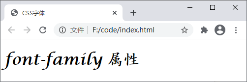
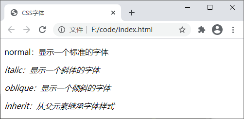
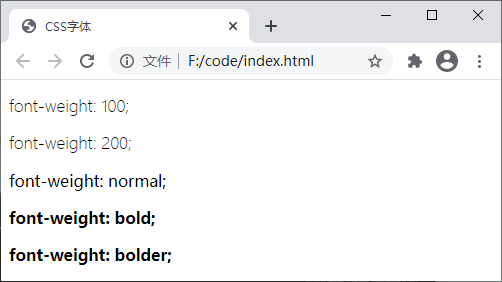
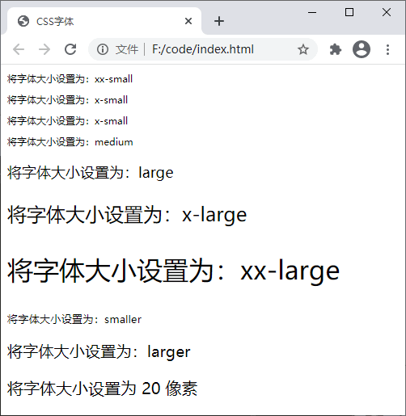
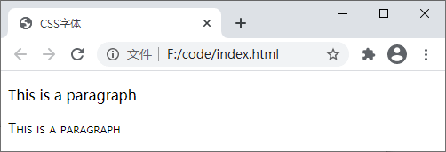
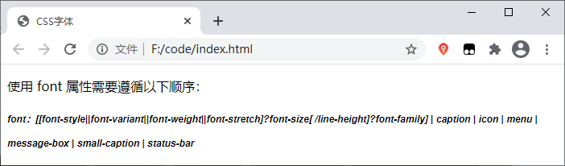

CSS字体样式（font）
除了前面介绍的背景外，字体设置也是网页设计中的重要组成部分，合适的字体不仅会使页面更加美观，也可以提升用户体验。CSS 中提供了一系列用于设置文本字体样式的属性，比如更改字体，控制字体大小和粗细等等。
font-family 属性的可选值如下：
下表中列举了一些常用的字体族（generic-family）：
【示例】使用 font-family 属性为 HTML 元素设置字体样式：
【示例】使用 font-style 属性设置字体的样式：
乍看之下，您可能觉得 italic 和 oblique 的效果是一样的。其实不然，italic 显示的字体的斜体版本，而 oblique 则只是一个倾斜的普通字体。
【示例】使用 font-weight 属性设置字体粗细：
【示例】使用 font-size 属性设置字体的大小：
【示例】使用 font-variant 属性设置小型大写字母：
【示例】使用 font 属性同时定义多个字体效果：
- font-family：设置字体；
- font-style：设置字体的风格，例如倾斜、斜体等；
- font-weight：设置字体粗细；
- font-size：设置字体尺寸；
- font-variant：将小写字母转换为小型大写字母；
- font-stretch：对字体进行伸缩变形（使用较少，并且主流浏览器都不支持）；
- font：字体属性的缩写，可以在一个声明中设置多个字体属性。
1. font-family
font-family 属性用来设置元素内文本的字体。由于字体的种类成千上万，而且有些还不是免费的，因此我们的电脑上几乎不可能拥有所有的字体。为了最大程度的保证我们设置的字体能够正常显示，可以通过 font-family 属性定义一个由若干字体名称组成的列表，字体名称之间使用逗号,分隔，浏览器会首先尝试列表中的第一个字体，如果不支持则尝试下一个，以此类推。font-family 属性的可选值如下：
| 值 | 描述 |
|---|---|
|
family-name、 generic-family |
family-name：字体名称，一个字体名称就代表一种字体，比如“微软雅黑”就是一种字体； generic-family：字体族，也就是某种类型的字体组合，一个字体族代表一种类型的字体，其中包含很多相似但又不同的字体，比如“sans-serif”就是一种无衬线字体，其中包含很多种相似的字体。 字体的默认值取决于浏览器设置 |
| inherit | 从父元素继承字体的设置 |
下表中列举了一些常用的字体族（generic-family）：
| 字体族 | 说明 | 字体 |
|---|---|---|
| serif | 有衬线字体，即在文字笔画的结尾添加特殊的装饰线或衬线 | "Lucida Bright"、"Lucida Fax"、Palatino、"Palatino Linotype"、Palladio、"URW Palladio"、serif |
| sans-serif | 无衬线字体，即在文字笔画结尾处是平滑的 | "Open Sans"、"Fira Sans"、"Lucida Sans"、"Lucida Sans Unicode"、"Trebuchet MS"、"Liberation Sans"、"Nimbus Sans L"、sans-serif |
| monospace | 等宽字体，即每个文字的宽度都是相同的 | "Fira Mono"、"DejaVu Sans Mono"、Menlo、Consolas、"Liberation Mono"、Monaco、"Lucida Console"、monospace |
| cursive | 草书字体，该字体有连笔或者特殊的斜体效果，会给人一种手写的感觉 | "Brush Script MT"、"Brush Script Std"、"Lucida Calligraphy"、"Lucida Handwriting"、"Apple Chancery"、cursive |
| fantasy | 具有特殊艺术效果的字体 | Papyrus、Herculanum、"Party LET"、"Curlz MT"、Harrington、fantasy |
【示例】使用 font-family 属性为 HTML 元素设置字体样式：
<!DOCTYPE html>
<html>
<head>
<title>CSS字体</title>
<style>
body {
font-family: "Lucida Calligraphy", cursive, serif, sans-serif;
}
</style>
</head>
<body>
<h1>font-family 属性</h1>
</body>
</html>
运行结果如下图所示：

图：font-family 属性演示
图：font-family 属性演示
注意：如果字体族或字体名称中包含空格或多个单词，则必须将它们使用引号包裹起来，例如"Times New Roman"、"Courier New"、"Segoe UI" 等，如果是在元素的 style 属性中使用则必须使用单引号。
在网页设计中最常用的字体族是 serif 和 sans-serif，因为它们适合阅读。在显示一些程序代码是通常使用等宽字体，这样可以使用程序代码看起来更加工整。2. font-style
font-style 属性用来设置字体的样式，例如斜体、倾斜等，该属性的可选值如下：| 值 | 描述 |
|---|---|
| normal | 默认值，文本以正常字体显示 |
| italic | 文本以斜体显示 |
| oblique | 文本倾斜显示 |
| inherit | 从父元素继承字体样式 |
【示例】使用 font-style 属性设置字体的样式：
<!DOCTYPE html>
<html>
<head>
<title>CSS字体</title>
<style>
body {
font-style: oblique;
}
.normal {
font-style: normal;
}
.italic {
font-style: italic;
}
.oblique {
font-style: oblique;
}
.inherit {
font-style: inherit;
}
</style>
</head>
<body>
<p class="normal">normal：显示一个标准的字体</p>
<p class="italic">italic：显示一个斜体的字体</p>
<p class="oblique">oblique：显示一个倾斜的字体</p>
<p class="inherit">inherit：从父元素继承字体样式</p>
</body>
</html>
运行结果如下图所示：

图：font-style 属性演示
图：font-style 属性演示
乍看之下，您可能觉得 italic 和 oblique 的效果是一样的。其实不然，italic 显示的字体的斜体版本，而 oblique 则只是一个倾斜的普通字体。
3. font-weight
font-weight 属性能够设置字体的粗细，可选值如下：| 值 | 描述 |
|---|---|
| normal | 默认值，标准字体 |
| bold | 粗体字体 |
| bolder | 更粗的字体 |
| lighter | 更细的字体 |
| 100、200、300、400、500、600、700、800、900 | 由细到粗的设置字体粗细，100 为最细的字体，400 等同于 normal，700 等同于 bold |
| inherit | 从父元素继承字体的粗细 |
【示例】使用 font-weight 属性设置字体粗细：
<!DOCTYPE html>
<html>
<head>
<title>CSS字体</title>
<style>
p.weight-100 {
font-weight: 100;
}
p.weight-200 {
font-weight: 200;
}
p.normal {
font-weight: normal;
}
p.bold {
font-weight: bold;
}
p.bolder {
font-weight: bolder;
}
</style>
</head>
<body>
<p class="weight-100">font-weight: 100;</p>
<p class="weight-200">font-weight: 200;</p>
<p class="normal">font-weight: normal;</p>
<p class="bold">font-weight: bold;</p>
<p class="bolder">font-weight: bolder;</p>
</body>
</html>
运行结果如下图所示：

图：font-weight 属性演示
图：font-weight 属性演示
4. font-size
font-size 属性用来设置字体的大小（字号），可选值如下：| 值 | 描述 |
|---|---|
| xx-small、x-small、small、medium、large、x-large、xx-large | 以关键字的形式把字体设置为不同的大小，从 xx-small 到 xx-large 依次变大，默认值为 medium |
| smaller | 为字体设置一个比父元素更小的尺寸 |
| larger | 为字体设置一个比父元素更大的尺寸 |
| length | 以数值加单位的形式把字体设置为一个固定尺寸，例如 18px、2em |
| % | 以百分比的形式为字体设置一个相对于父元素字体的大小 |
| inherit | 从父元素继承字体的尺寸 |
【示例】使用 font-size 属性设置字体的大小：
<!DOCTYPE html>
<html>
<head>
<title>CSS字体</title>
<style>
.xx_small {
font-size: xx-small;
}
.x_small {
font-size: x-small;
}
.small {
font-size: x-small;
}
.medium {
font-size: x-small;
}
.large {
font-size: large;
}
.x-large {
font-size: x-large;
}
.xx-large {
font-size: xx-large;
}
.smaller {
font-size: smaller;
}
.larger {
font-size: larger;
}
.font-20 {
font-size: 20px;
}
</style>
</head>
<body>
<p class="xx_small">将字体大小设置为：xx-small</p>
<p class="x_small">将字体大小设置为：x-small</p>
<p class="small">将字体大小设置为：x-small</p>
<p class="medium">将字体大小设置为：medium</p>
<p class="large">将字体大小设置为：large</p>
<p class="x-large">将字体大小设置为：x-large</p>
<p class="xx-large">将字体大小设置为：xx-large</p>
<p class="smaller">将字体大小设置为：smaller</p>
<p class="larger">将字体大小设置为：larger</p>
<p class="font-20">将字体大小设置为 20 像素</p>
</body>
</html>
运行结果如下图所示：

图：font-size 属性演示
图：font-size 属性演示
5. font-variant
font-variant 属性可以将文本中的小写英文字母转换为小型大写字母（转换后的大写字母与转换前小写字母的大小相仿，所以称之为小型大写字母）。font-variant 属性的可选值如下：| 值 | 描述 |
|---|---|
| normal | 默认值，浏览器会显示一个标准的字体 |
| small-caps | 将文本中的小写英文字母转换为小型大写字母 |
| inherit | 从父元素继承 font-variant 属性的值 |
【示例】使用 font-variant 属性设置小型大写字母：
<!DOCTYPE html>
<html>
<head>
<title>CSS字体</title>
<style>
.normal {
font-variant: normal
}
.small {
font-variant: small-caps
}
</style>
</head>
<body>
<p class="normal">This is a paragraph</p>
<p class="small">This is a paragraph</p>
</body>
</html>
运行结果如下图所示：

图：font-variant 属性演示
图：font-variant 属性演示
6. font
font 属性与前面介绍的 background 属性的功能类似，通过 font 属性可以同时设置多个字体属性，不同的是，使用 font 属性需要遵循以下顺序：font：[[font-style||font-variant||font-weight||font-stretch]?font-size[ /line-height]?font-family] | caption | icon | menu | message-box | small-caption | status-bar
在使用 font 属性时，有以下几点需要注意：- 使用 font 属性时必须按照如上所示的顺序，并且 font-size 和 font-family 两个属性不可忽略；
- font 属性中的每个参数仅允许设置一个值，除 font-size 和 font-family 属性外，被忽略的属性将被设置为各自的默认值；
-
若要定义 line-height 属性，则需要使用斜线
/将 font-size 和 line-height 属性分开。
【示例】使用 font 属性同时定义多个字体效果：
<!DOCTYPE html>
<html>
<head>
<title>CSS字体</title>
<style>
p.info {
font: italic bold 12px/30px arial, sans-serif;
}
</style>
</head>
<body>
<p>使用 font 属性需要遵循以下顺序：</p>
<p class="info">font：[[font-style||font-variant||font-weight||font-stretch]?font-size[ /line-height]?font-family] | caption | icon | menu | message-box | small-caption | status-bar</p>
</body>
</html>
运行结果如下图所示：

图：font 属性演示
图：font 属性演示
关注公众号「站长严长生」，在手机上阅读所有教程，随时随地都能学习。内含一款搜索神器，免费下载全网书籍和视频。

微信扫码关注公众号